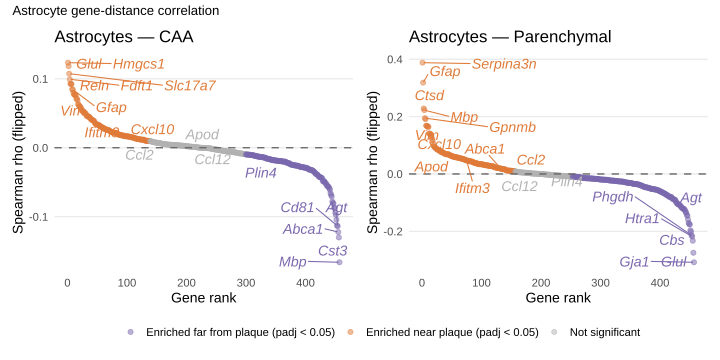
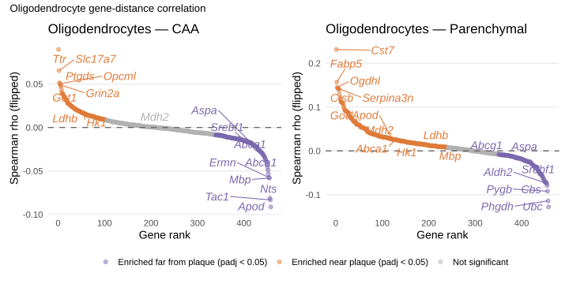

Rationale
Notebook 7 established that microglia activate a DAM transcriptional programme near parenchymal plaques and a distinct cholesterol/lipid programme near CAA. This constitutes spatial evidence for Layer 1 (Initiation) of the proposed three-layer glial response model.
Here we extend the same gene-distance correlation approach to astrocytes and oligodendrocytes to test whether Layers 2 and 3 also show plaque-proximity gradients:
Layer 2 — Amplification (Astrocytes) : Ifitm3, Ccl2, Ccl12, Cxcl10, Tnf, AgtLayer 3 — Remodeling (Oligodendrocytes) : Abca1, Abcg1, Apod, Srebf1, Got1↓, Ldhb↓
By restricting the analysis to a single cell type at a time we remove the cell-type composition confound: any residual gene-distance relationship reflects transcriptional changes within that cell type rather than differential abundance near plaques.
Setup and data loading
Code
source ("R/setup.R" )library (ggrepel)library (patchwork)library (ggVennDiagram)<- load_slides_and_distances ("full" )<- data$ slide1; slide2 <- data$ slide2<- data$ distances_all## Identify cell-types of interest <- "Astrocyte" <- "Oligodendrocyte" <- "OPC"
Subset objects and distances
Code
# Subset Seurat objects to target cell type <- function (slide_list, cell_types) {map (slide_list, \(obj) {<- obj$ annotatedclusters %in% cell_typessubset (obj, cells = colnames (obj)[keep])<- subset_by_type (list (slide1, slide2), ct_astro)<- subset_by_type (list (slide1, slide2), ct_oligo)# Subset distance table to matching cells <- cell_distances_all |> filter (cell %in% unlist (map (slides_astro, colnames)))<- cell_distances_all |> filter (cell %in% unlist (map (slides_oligo, colnames)))message (sprintf ("Astrocytes: %d cells" , nrow (dist_astro)))message (sprintf ("Oligodendrocytes: %d cells" , nrow (dist_oligo)))
Cell counts per group
Code
<- function (dist_df, label) {|> mutate (prox_caa = if_else (dist_caa < 50 , "proximal" , "distal" ),prox_paren = if_else (dist_paren < 50 , "proximal" , "distal" )|> group_by (sample_ID, Treatment.Group) |> summarise (n_total = n (),n_prox_caa = sum (prox_caa == "proximal" ),n_prox_paren = sum (prox_paren == "proximal" ),.groups = "drop" |> mutate (cell_type = label)bind_rows (build_count_table (dist_astro, "Astrocytes" ),build_count_table (dist_oligo, "Oligodendrocytes" )|> kbl (caption = "Cell counts per sample and proximity group" ) |> kable_styling ("striped" , full_width = FALSE )
Cell counts per sample and proximity group
KK4_464
Adu
7801
443
3154
Astrocytes
KK4_465
IgG
8786
518
4686
Astrocytes
KK4_492
Adu
9639
668
3670
Astrocytes
KK4_496
IgG
8020
606
4009
Astrocytes
KK4_502
Adu
6675
466
3490
Astrocytes
KK4_504
IgG
7568
640
3244
Astrocytes
KK4_464
Adu
11742
260
4864
Oligodendrocytes
KK4_465
IgG
12517
246
6789
Oligodendrocytes
KK4_492
Adu
13575
482
5757
Oligodendrocytes
KK4_496
IgG
10452
377
5367
Oligodendrocytes
KK4_502
Adu
11872
371
6107
Oligodendrocytes
KK4_504
IgG
10166
406
4766
Oligodendrocytes
Gene-distance correlation functions
These functions are identical to notebook 7. For each gene we compute a Spearman rank correlation between per-cell raw expression counts and distance to the nearest plaque of the specified type. The sign is flipped so that positive rho_flip = enriched near plaques.
Code
<- function (distance_col = "dist_any" ,min_expressing_cells = 50 <- map (seurat_list, \(obj) {LayerData (obj, assay = DefaultAssay (obj), layer = "counts" )<- Reduce (intersect, map (count_list, rownames))<- do.call (cbind, map (count_list, \(m) m[shared_genes, ]))<- intersect (colnames (counts), cell_distances$ cell)<- counts[, shared_cells]<- cell_distances |> filter (cell %in% shared_cells) |> arrange (match (cell, shared_cells)) |> pull (!! sym (distance_col))<- Matrix:: rowSums (counts > 0 )<- n_expressing >= min_expressing_cells<- counts[keep, ]message (sprintf ("Kept %d / %d genes (>= %d expressing cells)" ,sum (keep), length (keep), min_expressing_cells<- map (seq_len (nrow (counts)), \(i) {<- counts[i, ]<- cor.test (as.numeric (gene_expr), dist_vec,method = "spearman" , exact = FALSE )tibble (gene = rownames (counts)[i], rho = ct$ estimate, pval = ct$ p.value).progress = "Spearman correlations" ) |> bind_rows ()|> mutate (padj = p.adjust (pval, method = "BH" ),rho_flip = - rho,rank = rank (- rho_flip, ties.method = "first" ),sig = case_when (< 0.05 & rho_flip > 0 ~ "enriched_near" ,< 0.05 & rho_flip < 0 ~ "enriched_far" ,TRUE ~ "ns" |> arrange (rank)
Code
<- function (title = "Gene-distance correlation" ,n_top = 5 ,genes_to_label = NULL <- results |> filter (sig == "enriched_near" ) |> slice_min (rank, n = n_top)<- results |> filter (sig == "enriched_far" ) |> slice_max (rank, n = n_top)<- bind_rows (top_pos, top_neg)if (! is.null (genes_to_label)) {<- results |> filter (gene %in% genes_to_label)<- bind_rows (auto_label, user_genes) |> distinct (gene, .keep_all = TRUE )<- c ("enriched_near" = "#E07B39" ,"enriched_far" = "#7B68AE" ,"ns" = "grey70" ggplot (results, aes (x = rank, y = rho_flip)) + geom_point (aes (colour = sig), size = 2 , alpha = 0.5 ) + geom_hline (yintercept = 0 , linetype = "dashed" , colour = "grey40" ) + geom_text_repel (data = auto_label,aes (label = gene, colour = sig),size = 5 ,fontface = "italic" ,box.padding = 0.4 ,max.overlaps = 20 ,show.legend = FALSE ,seed = 23 + scale_colour_manual (values = colour_map,labels = c ("enriched_near" = "Enriched near plaque (padj < 0.05)" ,"enriched_far" = "Enriched far from plaque (padj < 0.05)" ,"ns" = "Not significant" + labs (title = title,x = "Gene rank" ,y = "Spearman rho (flipped)" ,colour = NULL + theme_minimal (base_size = 14 ) + theme (legend.position = "bottom" ,panel.grid.minor = element_blank (),panel.grid.major.x = element_blank ()
Astrocyte gene-distance correlations
Candidate genes from DEG_consolidated model (Layer 2 — Amplification): - Near plaque: Ifitm3, Ccl2, Ccl12, Cxcl10, Agt, Gfap, Vim, S100b - Far from plaque: homeostatic astrocyte markers
Code
<- c ("Ifitm3" , "Ccl2" , "Ccl12" , "Cxcl10" , "Agt" ,"Gfap" , "Vim" , "S100b" , "Apod" , "Abca1" , "Plin4" <- compute_gene_distance_correlation (distance_col = "dist_caa" <- compute_gene_distance_correlation (distance_col = "dist_paren"
Rank plots — astrocytes
Code
<- plot_gene_distance_correlation (title = "Astrocytes — CAA" ,genes_to_label = astro_candidate_genes<- plot_gene_distance_correlation (title = "Astrocytes — Parenchymal" ,genes_to_label = astro_candidate_genes| p_paren_astro) + plot_annotation (title = "Astrocyte gene-distance correlation" ) + plot_layout (guides = "collect" ) & theme (legend.position = "bottom" )

Spearman gene-distance correlation for astrocytes. Positive rho_flip = enriched near plaque. Top 5 enriched-near and enriched-far genes are automatically labeled; candidate Layer 2 genes (Ifitm3, Ccl2, Ccl12, Cxcl10, Agt, Gfap, Vim) are additionally labeled if significant.
Top astrocyte genes
Code
<- function (results, label, n = 10 ) {bind_rows (|> filter (sig == "enriched_near" ) |> slice_min (rank, n = n),|> filter (sig == "enriched_far" ) |> slice_max (rank, n = n)|> select (gene, rho, rho_flip, pval, padj, rank, sig) |> mutate (across (c (rho, rho_flip), \(x) round (x, 4 )),across (c (pval, padj), \(x) ifelse (x < 1e-300 , "< 1e-300" , formatC (x, format = "e" , digits = 2 )))|> kbl (caption = label) |> kable_styling ("striped" , full_width = FALSE )show_top (cor_caa_astro, "Top genes — astrocytes, distance to CAA" )
Top genes — astrocytes, distance to CAA
Hmgcs1
-0.1234
0.1234
1.04e-163
1.59e-161
1
enriched_near
Glul
-0.1183
0.1183
1.08e-150
9.89e-149
2
enriched_near
Slc17a7
-0.1074
0.1074
2.37e-124
1.35e-122
3
enriched_near
Fdft1
-0.0993
0.0993
1.67e-106
7.64e-105
4
enriched_near
Reln
-0.0928
0.0928
2.86e-93
1.00e-91
5
enriched_near
Msmo1
-0.0926
0.0926
7.58e-93
2.48e-91
6
enriched_near
Mrc1
-0.0920
0.0920
1.17e-91
3.57e-90
7
enriched_near
Vtn
-0.0846
0.0846
8.46e-78
2.15e-76
8
enriched_near
Gfap
-0.0843
0.0843
3.74e-77
9.00e-76
9
enriched_near
Cux2
-0.0798
0.0798
2.44e-69
5.07e-68
10
enriched_near
Mbp
0.1661
-0.1661
4.82e-297
2.20e-294
457
enriched_far
Cst3
0.1302
-0.1302
3.43e-182
7.84e-180
456
enriched_far
Abca1
0.1223
-0.1223
7.72e-161
8.82e-159
455
enriched_far
Agt
0.1137
-0.1137
3.55e-139
2.70e-137
454
enriched_far
Cd81
0.1129
-0.1129
3.04e-137
1.98e-135
453
enriched_far
Srebf1
0.1045
-0.1045
9.48e-118
4.81e-116
452
enriched_far
Pgm1
0.0973
-0.0973
2.69e-102
1.12e-100
451
enriched_far
Folh1
0.0941
-0.0941
1.00e-95
3.82e-94
450
enriched_far
Vcam1
0.0873
-0.0873
1.42e-82
4.05e-81
449
enriched_far
Nts
0.0872
-0.0872
1.61e-82
4.33e-81
448
enriched_far
Code
show_top (cor_paren_astro, "Top genes — astrocytes, distance to parenchymal" )
Top genes — astrocytes, distance to parenchymal
Serpina3n
-0.3880
0.3880
< 1e-300
< 1e-300
1
enriched_near
Gfap
-0.3184
0.3184
< 1e-300
< 1e-300
2
enriched_near
Ctsd
-0.2286
0.2286
< 1e-300
< 1e-300
3
enriched_near
Mbp
-0.2224
0.2224
< 1e-300
< 1e-300
4
enriched_near
Gpnmb
-0.1947
0.1947
< 1e-300
< 1e-300
5
enriched_near
Ctsb
-0.1910
0.1910
< 1e-300
< 1e-300
6
enriched_near
Tmsb4x
-0.1686
0.1686
< 1e-300
< 1e-300
7
enriched_near
Vim
-0.1675
0.1675
< 1e-300
1.44e-300
8
enriched_near
Lpl
-0.1661
0.1661
4.14e-297
9.96e-296
9
enriched_near
Ftl1
-0.1660
0.1660
1.10e-296
2.52e-295
10
enriched_near
Gja1
0.3079
-0.3079
< 1e-300
< 1e-300
457
enriched_far
Glul
0.2747
-0.2747
< 1e-300
< 1e-300
456
enriched_far
Cbs
0.2328
-0.2328
< 1e-300
< 1e-300
455
enriched_far
Htra1
0.2182
-0.2182
< 1e-300
< 1e-300
454
enriched_far
Phgdh
0.2140
-0.2140
< 1e-300
< 1e-300
453
enriched_far
Glud1
0.2010
-0.2010
< 1e-300
< 1e-300
452
enriched_far
Pygb
0.1965
-0.1965
< 1e-300
< 1e-300
451
enriched_far
Fdft1
0.1763
-0.1763
< 1e-300
< 1e-300
450
enriched_far
Msmo1
0.1747
-0.1747
< 1e-300
< 1e-300
449
enriched_far
Plpp3
0.1703
-0.1703
< 1e-300
< 1e-300
448
enriched_far
Venn diagram — astrocyte enriched-near overlap
Code
<- cor_caa_astro |> filter (padj < 0.05 , rho_flip > 0 ) |> pull (gene)<- cor_paren_astro |> filter (padj < 0.05 , rho_flip > 0 ) |> pull (gene)ggVennDiagram (list (CAA = near_caa_astro, Parenchymal = near_paren_astro),label_alpha = 0 , label = "count" , shape_id = "201" + labs (title = "Astrocytes — enriched-near genes (padj < 0.05)" ) + theme (legend.position = "none" ) + scale_fill_distiller (palette = "RdBu" )
Code
cat ("Common enriched-near astrocyte genes (CAA and parenchymal): \n " ,paste (intersect (near_caa_astro, near_paren_astro), collapse = ", " ))
Common enriched-near astrocyte genes (CAA and parenchymal):
Gfap, Vim, Cox4i1, Whrn, Ifitm3, Gpnmb, Ifitm2, Lyz2, Uba52, Aqp4, Cd44, Cerk, Cd63, App, Spp1, Cx3cr1, C1qc, Hk2, Pvalb, St3gal6, Ldha, Chst11, Cd14, Flt1, Fxyd5, Ftl1, C1qa, Tshz2, Pdha1, Ogdh, Jund, Bcl2a1b, C3, Tmsb4x, Pkm, Ccl3, Mt2, Cd68, Tagln, B3gat3, Arsb, Trem2, Abca7, Hexb, Dlst, Ocln, Gns, Got2, Lgals3, Cxcl10, Pgd
Oligodendrocyte gene-distance correlations
Candidate genes from DEG_consolidated model (Layer 3 — Remodeling): - Near plaque: Abca1, Abcg1, Srebf1, Apod, Aspa, Mbp, Plp1 - Far from plaque: Got1, Ldhb, Mdh2, Hk1 (metabolic downregulation)
Code
<- c ("Abca1" , "Abcg1" , "Srebf1" , "Apod" , "Aspa" ,"Mbp" , "Plp1" , "Got1" , "Ldhb" , "Mdh2" , "Hk1" <- compute_gene_distance_correlation (distance_col = "dist_caa" <- compute_gene_distance_correlation (distance_col = "dist_paren"
Rank plots — oligodendrocytes
Code
<- plot_gene_distance_correlation (title = "Oligodendrocytes — CAA" ,genes_to_label = oligo_candidate_genes<- plot_gene_distance_correlation (title = "Oligodendrocytes — Parenchymal" ,genes_to_label = oligo_candidate_genes| p_paren_oligo) + plot_annotation (title = "Oligodendrocyte gene-distance correlation" ) + plot_layout (guides = "collect" ) & theme (legend.position = "bottom" )

Spearman gene-distance correlation for oligodendrocytes. Top 5 enriched-near and enriched-far genes are automatically labeled; candidate Layer 3 genes (Abca1, Abcg1, Srebf1, Apod, Got1, Ldhb) are additionally labeled if present.
Top oligodendrocyte genes
Code
show_top (cor_caa_oligo, "Top genes — oligodendrocytes, distance to CAA" )
Top genes — oligodendrocytes, distance to CAA
Ttr
-0.0897
0.0897
1.25e-125
2.87e-123
1
enriched_near
Slc17a7
-0.0654
0.0654
1.74e-67
1.59e-65
2
enriched_near
Ptgds
-0.0513
0.0513
3.17e-42
1.62e-40
3
enriched_near
Opcml
-0.0504
0.0504
9.37e-41
4.29e-39
4
enriched_near
Grin2a
-0.0488
0.0488
2.24e-38
8.53e-37
5
enriched_near
Lamp5
-0.0473
0.0473
4.53e-36
1.60e-34
6
enriched_near
Slc17a6
-0.0437
0.0437
3.86e-31
1.18e-29
7
enriched_near
Snap25
-0.0404
0.0404
9.29e-27
2.50e-25
8
enriched_near
Atp1b2
-0.0387
0.0387
1.05e-24
2.41e-23
9
enriched_near
Whrn
-0.0386
0.0386
1.24e-24
2.70e-23
10
enriched_near
Apod
0.0913
-0.0913
4.27e-130
1.96e-127
458
enriched_far
Tac1
0.0833
-0.0833
1.81e-108
2.76e-106
457
enriched_far
Nts
0.0811
-0.0811
6.86e-103
7.85e-101
456
enriched_far
Mbp
0.0582
-0.0582
8.17e-54
6.24e-52
455
enriched_far
Ermn
0.0575
-0.0575
1.30e-52
8.48e-51
454
enriched_far
Tmsb4x
0.0538
-0.0538
3.67e-46
2.10e-44
453
enriched_far
Prdx1
0.0494
-0.0494
3.02e-39
1.26e-37
452
enriched_far
Serpina3n
0.0461
-0.0461
1.94e-34
6.34e-33
451
enriched_far
Ptges3
0.0431
-0.0431
3.02e-30
8.64e-29
450
enriched_far
Cldn11
0.0400
-0.0400
2.63e-26
6.70e-25
449
enriched_far
Code
show_top (cor_paren_oligo, "Top genes — oligodendrocytes, distance to parenchymal" )
Top genes — oligodendrocytes, distance to parenchymal
Cst7
-0.2317
0.2317
< 1e-300
< 1e-300
1
enriched_near
Fabp5
-0.1570
0.1570
< 1e-300
< 1e-300
2
enriched_near
Ogdhl
-0.1453
0.1453
< 1e-300
< 1e-300
3
enriched_near
Ctsb
-0.1429
0.1429
< 1e-300
< 1e-300
4
enriched_near
Serpina3n
-0.1427
0.1427
< 1e-300
< 1e-300
5
enriched_near
Ctsd
-0.1413
0.1413
< 1e-300
< 1e-300
6
enriched_near
Gpnmb
-0.1410
0.1410
< 1e-300
< 1e-300
7
enriched_near
App
-0.1311
0.1311
6.09e-267
3.48e-265
8
enriched_near
Cd68
-0.1204
0.1204
1.80e-225
8.24e-224
9
enriched_near
Bcl2a1b
-0.1178
0.1178
8.35e-216
3.48e-214
10
enriched_near
Ubc
0.1279
-0.1279
4.30e-254
2.19e-252
458
enriched_far
Phgdh
0.1140
-0.1140
4.66e-202
1.78e-200
457
enriched_far
Pygb
0.0921
-0.0921
2.42e-132
4.81e-131
456
enriched_far
Cbs
0.0792
-0.0792
2.86e-98
3.97e-97
455
enriched_far
Aldh2
0.0742
-0.0742
1.69e-86
2.03e-85
454
enriched_far
Gja1
0.0724
-0.0724
2.23e-82
2.49e-81
453
enriched_far
Clu
0.0717
-0.0717
9.27e-81
1.01e-79
452
enriched_far
Ttr
0.0714
-0.0714
3.35e-80
3.57e-79
451
enriched_far
Psap
0.0703
-0.0703
9.83e-78
9.79e-77
450
enriched_far
Chst1
0.0688
-0.0688
1.52e-74
1.48e-73
449
enriched_far
Venn diagram — oligodendrocyte enriched-near overlap
Code
<- cor_caa_oligo |> filter (padj < 0.05 , rho_flip > 0 ) |> pull (gene)<- cor_paren_oligo |> filter (padj < 0.05 , rho_flip > 0 ) |> pull (gene)ggVennDiagram (list (CAA = near_caa_oligo, Parenchymal = near_paren_oligo),label_alpha = 0 , label = "count" , shape_id = "201" + labs (title = "Oligodendrocytes — enriched-near genes (padj < 0.05)" ) + theme (legend.position = "none" ) + scale_fill_distiller (palette = "RdBu" )
Code
cat ("Common enriched-near oligodendrocyte genes (CAA and parenchymal): \n " ,paste (intersect (near_caa_oligo, near_paren_oligo), collapse = ", " ))
Common enriched-near oligodendrocyte genes (CAA and parenchymal):
Slc17a7, Ptgds, Opcml, Slc17a6, Snap25, Extl3, Bhlhe40, Gls, B3gat3, Pvalb, Acly, Pkm, Timp3, Arsb, Cerk, Got1, Ldhb, Mdh1, Cux2, Oxct1, Cox4i1, Glul, Got2, Ogdhl, Hbb-bs, Akt1, Pank3, Chst11, Hk1, Flt1, Cd74, Gns, Tshz2, Uqcrc1, Plcb4, H2-Eb1, Acsl4, Rorb, Hsd11b1, Pdhb, Pmm1, Sgpl1, Gpnmb, Cldn5, Abhd17a, Fezf2, Pdha1, Smpd1, Maf, Sorl1
Cross-cell-type comparison
Astrocytes vs oligodendrocytes — candidate gene heatmap
Visualise the rho_flip values for all DEG_consolidated candidate genes across both cell types and both plaque types in a single heatmap.
Code
<- union (astro_candidate_genes, oligo_candidate_genes)<- bind_rows (|> mutate (cell_type = "Astrocytes" , plaque = "CAA" ),|> mutate (cell_type = "Astrocytes" , plaque = "Parenchymal" ),|> mutate (cell_type = "Oligodendrocytes" , plaque = "CAA" ),|> mutate (cell_type = "Oligodendrocytes" , plaque = "Parenchymal" )|> filter (gene %in% all_candidates) |> mutate (facet = paste (cell_type, plaque, sep = " — " ),sig_label = case_when (< 0.001 ~ "***" ,< 0.01 ~ "**" ,< 0.05 ~ "*" ,TRUE ~ "" ggplot (heatmap_df, aes (x = facet, y = gene, fill = rho_flip)) + geom_tile (colour = "white" , linewidth = 0.5 ) + geom_text (aes (label = sig_label), size = 4 , vjust = 0.75 ) + scale_fill_gradient2 (low = "#7B68AE" , mid = "white" , high = "#E07B39" ,midpoint = 0 ,name = "rho_flip \n (+ = near plaque)" + labs (title = "Candidate gene-distance correlations" ,subtitle = "* padj < 0.05 ** padj < 0.01 *** padj < 0.001" ,x = NULL , y = NULL + theme_minimal (base_size = 13 ) + theme (axis.text.x = element_text (angle = 30 , hjust = 1 ))